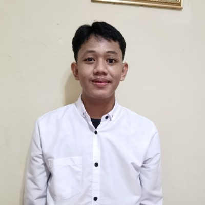

D3 Teknik Komputer
Universitas Bani Saleh, 2024 - sekarang
Sedang menempuh pendidikan Diploma III Teknik Komputer.

Mahasiswa Teknik Komputer
Juliansyahriski09@gmail.com
0851-3564-7289
Mahasiswa D3 Teknik Komputer Universitas Bani Saleh yang memiliki ketertarikan pada bidang partnership, creative design, dan digital content. Memiliki pengalaman dalam organisasi, kepanitiaan, administrasi, serta pengelolaan sponsorship dan komunikasi dengan pihak eksternal. Terbiasa bekerja secara kolaboratif, mengelola kegiatan, dan beradaptasi dengan lingkungan kerja baru.
Universitas Bani Saleh, 2024 - sekarang
Sedang menempuh pendidikan Diploma III Teknik Komputer.
2021 - 2024
Jurusan Teknik Komputer
Universitas Bani Saleh | Periode 2025–2026
Universitas Bani Saleh | 2025
Pengalaman Magang | 5 bulan
Universitas Bani Saleh
Pengalaman memimpin pelaksanaan turnamen futsal, mengoordinasikan divisi, serta menjalin komunikasi dengan sponsor dan media partner.
Pengalaman mengelola pendekatan sponsor, komunikasi kerja sama, dan kebutuhan sponsorship kegiatan.
Website CV sebagai proyek tugas UTS Teknologi Web.